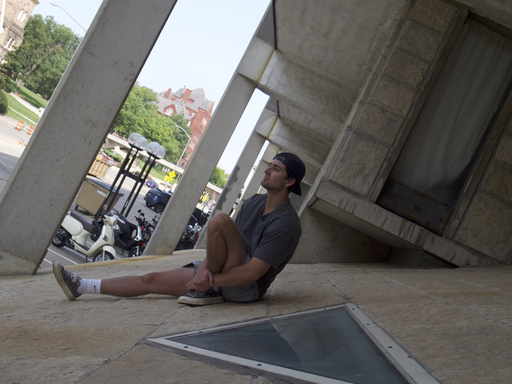
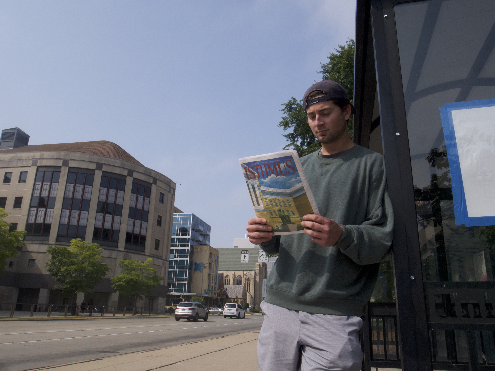
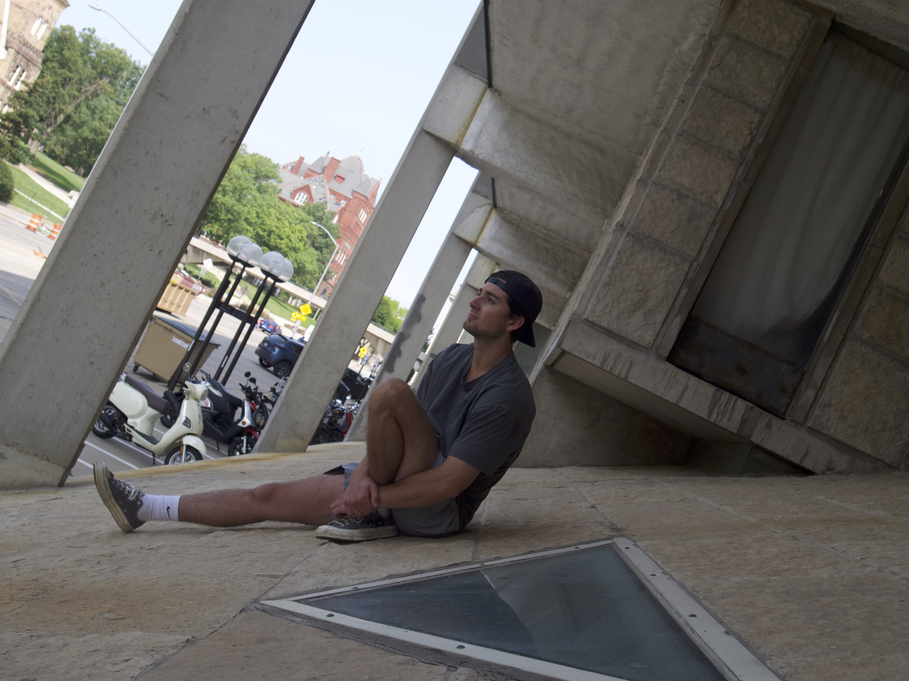
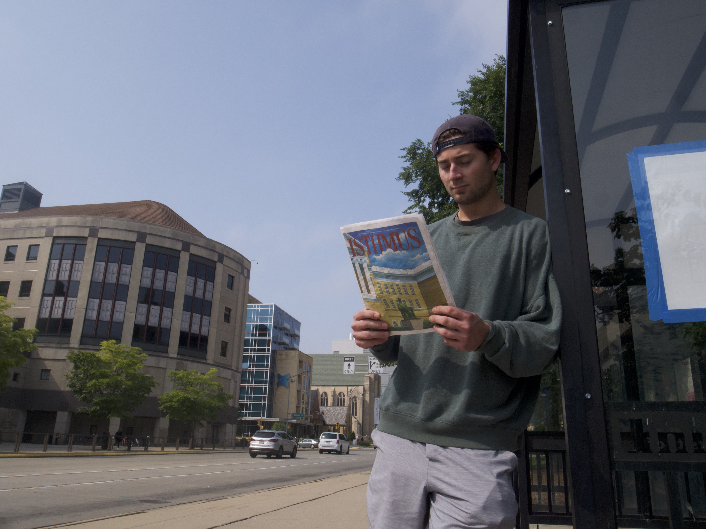

This is a fun little project I did with a colleague of mine named Jack O’Hare and it’s really the only remotely interesting (even that’s a bit of a stretch, no offense Jack) that I’ve made so far this year. I am the photographer; I took the pictures, and Jack is the model; he posed for the pictures.
In theory the assignment called for me to take pictures that somehow represent Jack or help us get to know him, but realistically I just walked around a 1-block radius of Vilas trying to find interesting-looking scenery and then molded my narrative of Jack’s life to fit what I found. This is what I found. Enjoy. Or don't, I don't care.
 


